Intro to Generative AI & Data Analysis
With the rise in popularity of generative AI chatbots, people are now using them to assist with programming and data analysis. Let's explore some ways you can integrate generative AI into your programming and data analysis workflows.

A new data analyst assistant: ChatGPT 3
This tutorial will use ChatGPT-3, but the concepts discussed are applicable to other generative AI (GenAI) models. While ChatGPT-3 doesn't support uploading files (text, Excel, etc.) or running code directly in the browser, it still offers valuable assistance for data analysis tasks. Here are a few ways ChatGPT-3 can help:
- Debugging code or interpreting error messages
- Clarifying how specific code works
- Adding comments or documentation to your code
- Converting code from one programming language to another
- Crafting regular expressions
- Starting projects from scratch
Tutorial: Debugging an R Script
Scenario: We are researchers trying to calculate the mean salary for different workplaces with R, but we are receiving an error message. We’re not very familiar with R, so we'd like help debugging our code. We decide to ask ChatGPT for assistance in fixing our code.
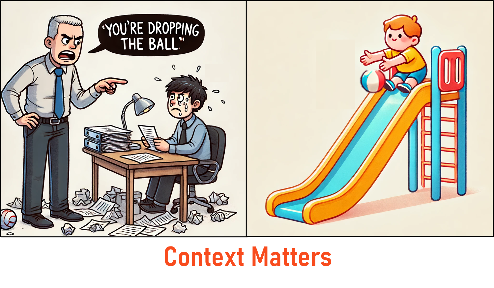In general, providing context about who you are and what you're trying to accomplish can help achieve better results from a large language model (LLM). Similarly, a role can also be defined for the LLM to model its responses after. If you're new to using GenAI or are not familiar with how context relates to GenAI, you can review these concepts here. Let’s start by providing context about what we’re trying to accomplish, as well as, specify a preference for concise language.
Specifying context
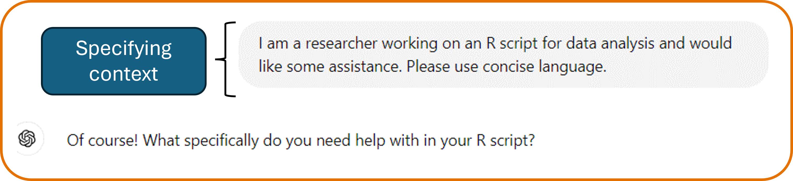Next, we'll provide additional details on the task we want ChatGPT-3 to perform. Giving more information in your initial prompt can improve results, but you can also provide further guidance in future prompts to refine the outcome.
For this example, we'll share our R code and the error message we received with ChatGPT-3. When copying multiple pieces of information, it's helpful to separate the different parts of the prompt with new lines or quotations.
Instructions
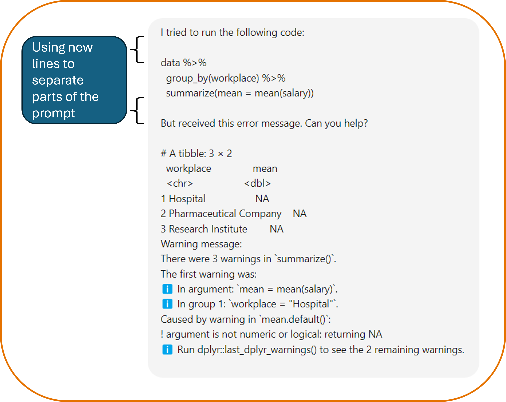ChatGPT 3 Response
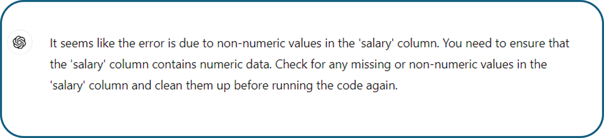ChatGPT-3 suggests that there may be non-numeric values in the 'salary' column. We were expecting the 'salary' column to contain only numeric data, so why would R treat it as non-numeric? If there are non-numeric values, how do we correct this? Remember, this should be treated like a conversation, so let's follow up with additional questions.
Follow-up Question
ChatGPT 3 Response
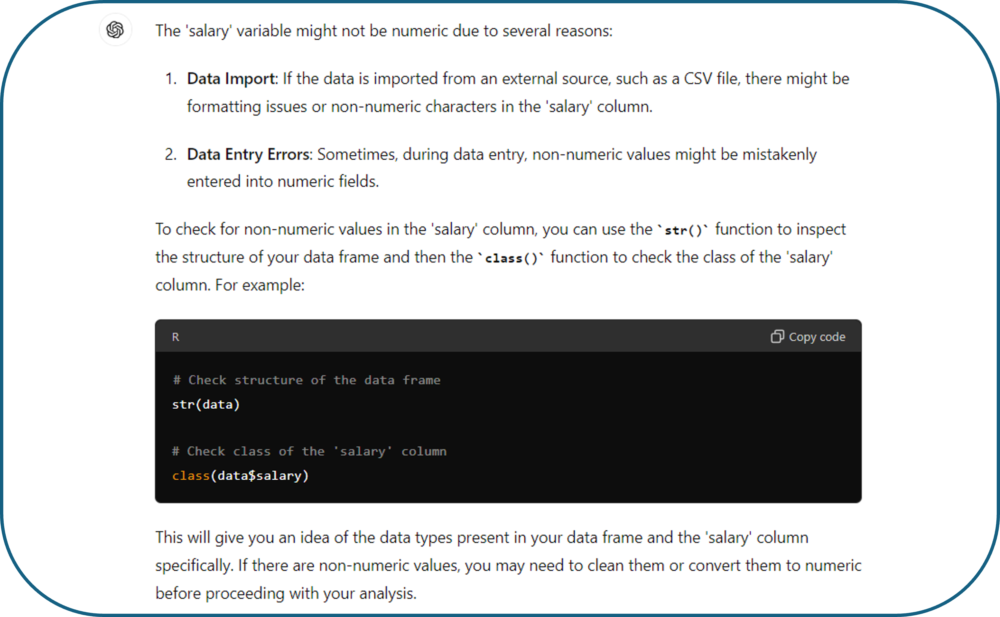ChatGPT-3 provides some information on why there might be non-numeric data and how we can check for it. When we run the suggested code, we see that several values say "Not Reported." To ensure there aren't more unexpected values in our dataset, let’s ask ChatGPT-3 how to search specifically for non-numeric entries.
Follow-up Question
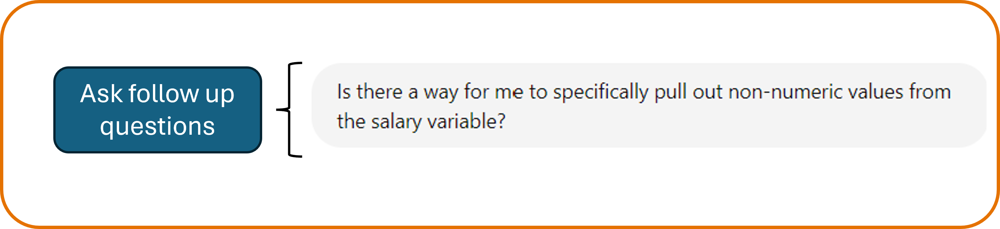ChatGPT 3 Response
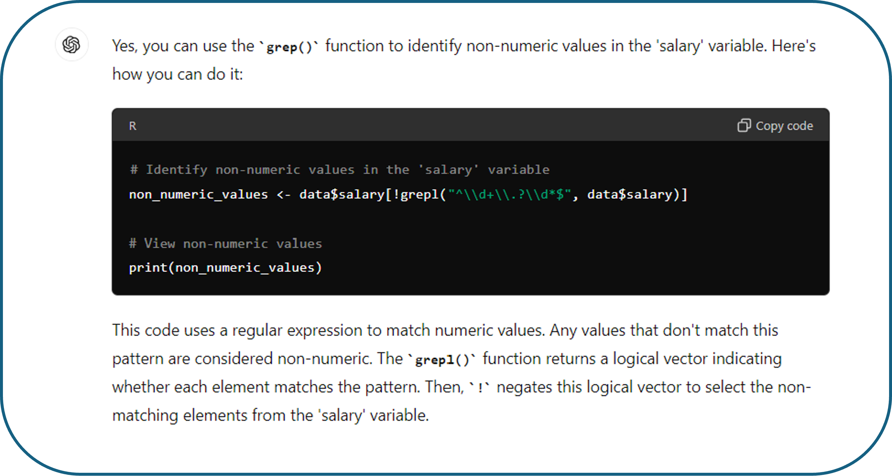Now, ChatGPT-3 provided code that uses regular expressions to search for any non-numeric values in the salary column. In fact, ChatGPT and LLMs, in general, are particularly helpful with regular expressions and text manipulation. If you're not familiar with regular expressions, you can always ask ChatGPT for additional details.
Follow-up Question
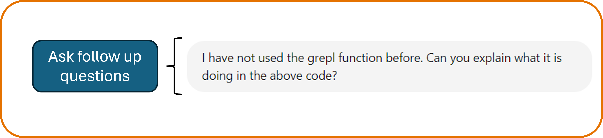ChatGPT 3 Response
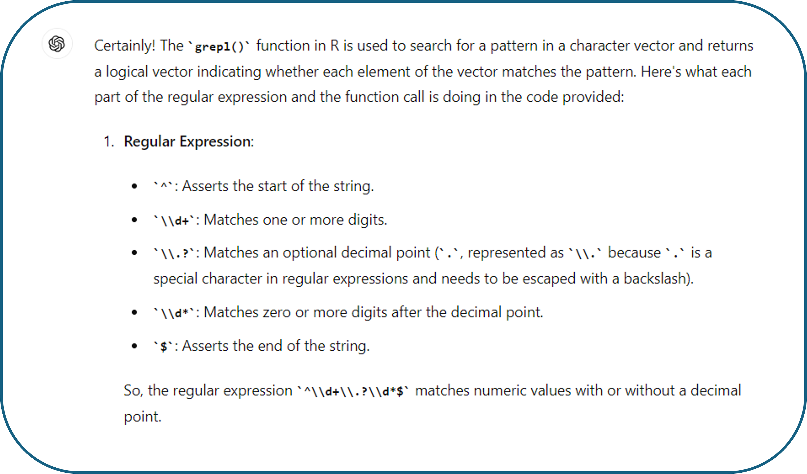ChatGPT-3 provided a clear explanation of what the grepl function does, the regular expression pattern it used, and how it was implemented in our specific code.
If we're satisfied with this explanation and want to ensure we'll remember how this code works in the future, we can ask ChatGPT-3 for help with writing additional comments.
Ask for documentation
ChatGPT 3 Response
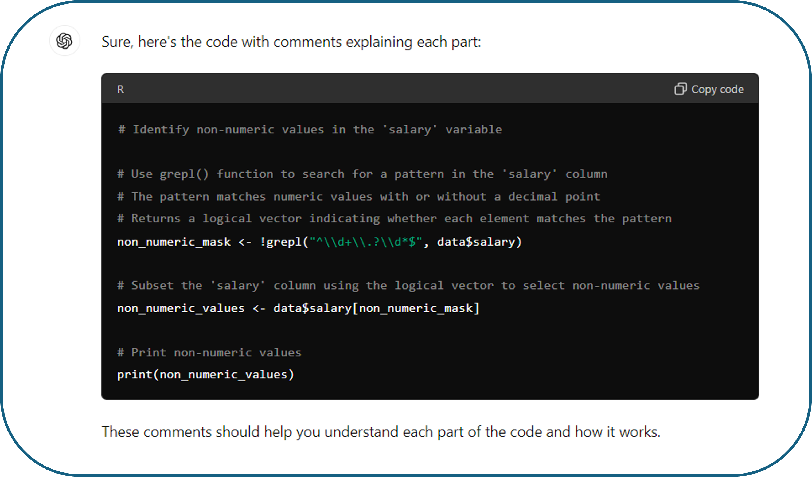In this example, we asked for clarity on code produced by ChatGPT, but we could also use it to better understand code written by colleagues or publicly available code. Additionally, ChatGPT can help comment scripts you've written entirely by yourself.
Another useful feature of ChatGPT-3 is its ability to convert code between different languages. So far, we've been writing code in R, but if you were more familiar with Python, you could ask ChatGPT-3 to translate the code into Python instead.
Convert between programming languages
ChatGPT 3 Response
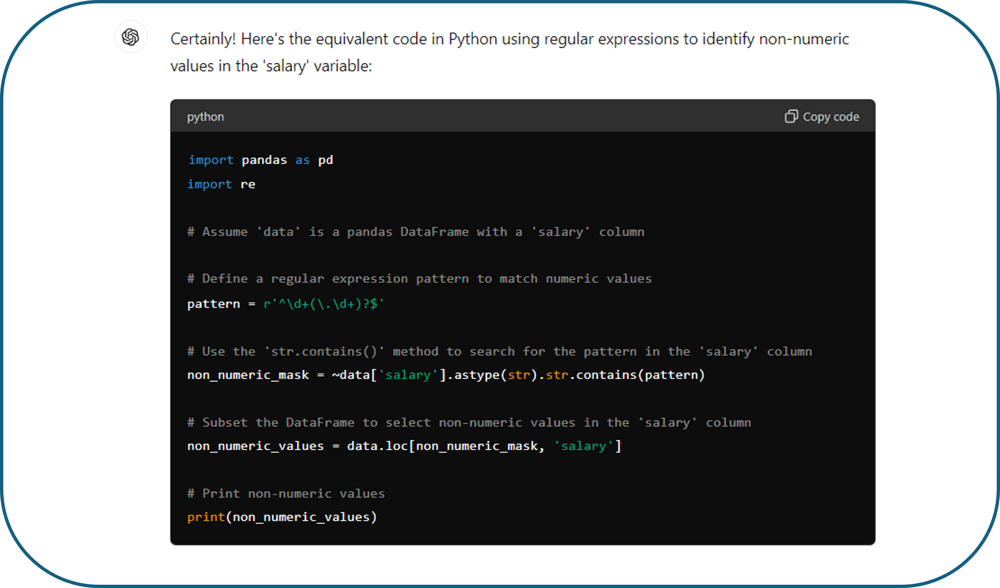Just like that, we have a Python script!
For this tutorial, we started with pre-existing R code. If you were starting from scratch, you could describe your dataset to ChatGPT-3 and have it generate the code, which you would then copy and run locally. Instead of showing an example of that, in the next tutorial, we will discuss ChatGPT-4, which allows you to upload files and run Python code directly in the browser.
Key takeaways
ChatGPT and other GenAI models can be very helpful in your data analysis, but there are a few important things to keep in mind:
- Providing context or assigning a role can help improve results
- This is an iterative process, and you will most likely have to ask follow-up questions
- Never accept results without verifying them
- These tools are still evolving